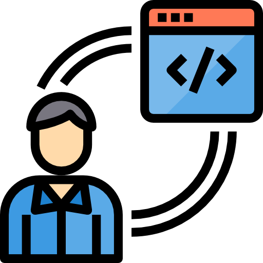
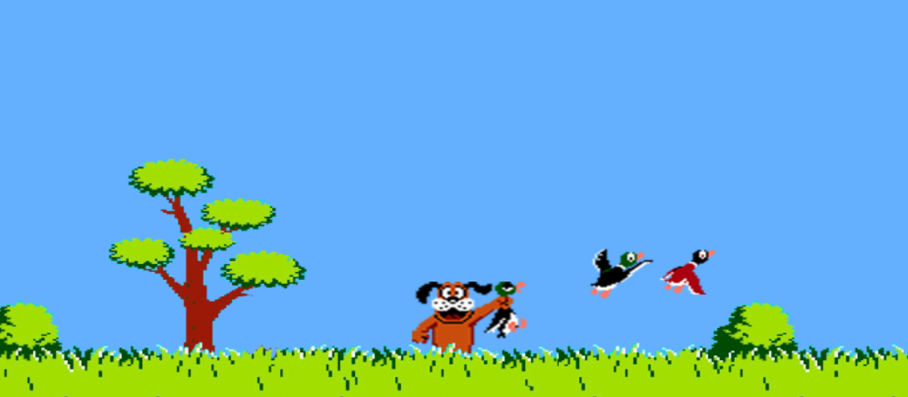

Studente del corso ITS EQF 5 in sviluppo software e applicazioni web. Appassionato di tecnologie moderne e pronto a entrare nel mondo del lavoro.
La mia passione per lo sviluppo web e il percorso di crescita professionale

Le tecnologie che sto imparando e utilizzando nei miei progetti
Progetti sviluppati durante il mio percorso formativo e nel tempo libero
Applicazione per testare la trasmissione sicura dei file tra utenti, con verifica automatica dell'integrità dei dati tramite algoritmo hash.
Java • Hashing • Sicurezza GitHub
Videogioco interattivo ispirato al classico Duck Hunt, realizzato con Processing. Include gestione input, animazioni e rilevamento collisioni.
Processing • Java • Game dev • Grafica 2D • Interazione GitHubGioco 3D in prima persona sviluppato in Processing. Il labirinto viene generato da file CSV configurabili e include movimento, interazione e gestione di materiali.
Processing • Java • 3D graphics • Game dev • CSV parsing GitHubSito demo per simulare il furto di credenziali via phishing e codice JS offuscato. Progetto educativo di ethical hacking.
HTML5 • CSS3 • JavaScript • Phishing • Ethical hacking GitHubIl mio percorso di apprendimento e crescita professionale
ITS PRODIGI
Novembre 2024 - in corso
Corso biennale post-diploma focalizzato su amministrazione di sistemi e reti, cybersecurity, virtualizzazione, automazione e gestione dell'infrastruttura IT.
Istituto Tecnico Tecnologico Statale "Silvano Fedi - Enrico Fermi"
2019 - luglio 2024
Diploma di perito informatico con specializzazione in programmazione, reti e sistemi informatici.
I principali sistemi operativi che ho usato durante il percorso formativo e lavorativo, suddivisi per ambito